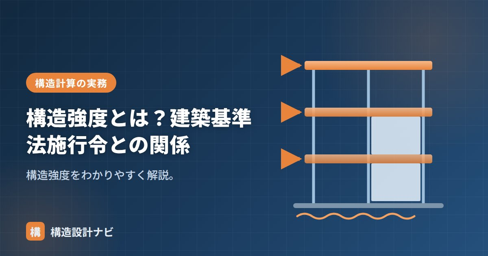

構造強度とは？建築基準法施行令との関係

構造強度とは、建築物が自重や地震・風などの力に対して安全であるための構造に関する技術的基準の総称です。建築基準法施行令の第3章が「構造強度」にあてられており、木造・鉄骨造・鉄筋コンクリート造など構造種別ごとの仕様から、許容応力度計算に至るまで、構造設計の実務で参照する規定の大部分がここに含まれます。構造強度という言葉自体は法律上の見出しの名称ですが、実務では「守るべき構造ルールの集合体」というイメージで使われることが多い用語です。
- 構造強度は建築基準法施行令第3章にまとめられた構造に関する技術的基準の総称
- 法20条の大原則を、仕様規定と構造計算という2つの方法で具体化している
- 耐久性等関係規定はどんな計算ルートを選んでも必ず適用される
建築基準法施行令との関係
建築基準法第20条が「建築物は自重・積載荷重・地震などに対して安全な構造でなければならない」という大原則（構造耐力）を定め、その具体的な基準を施行令第3章「構造強度」が定めています。法律は理念・大枠を示し、施行令や告示がその中身を具体的な数値・手順として補うという、建築基準法特有の階層構造を理解しておくと、条文を読み解くときに迷いにくくなります。
施行令第3章の構成（概要）
| 区分 | 内容 |
|---|---|
| 総則・耐久性等関係規定 | 共通の基本ルール（36条ほか） |
| 仕様規定 | 木造・組積造・RC造・S造・SRC造などの具体的な基準 |
| 構造計算 | 許容応力度計算・保有水平耐力計算など（計算ルート） |
このように施行令第3章は、共通ルールである総則・耐久性等関係規定を土台として、構造種別ごとの仕様規定と、規模に応じた構造計算のルートが積み上がる構成になっています。どの建築物にも同じ厚みの規定が適用されるわけではなく、規模や構造種別によって求められる検討の深さが変わる点が特徴です。
仕様規定と構造計算の違い
構造強度の基準は、大きく「仕様規定（具体的な仕様を守る）」と「構造計算（計算で安全を確かめる）」の2本立てです。規模・構造種別に応じて、どこまで計算が必要かが決まります。計算をしても耐久性等関係規定は必ず適用されます。
仕様規定は「柱の小径を何cm以上にする」「筋かいの端部をこう緊結する」といった具体的な数値・工法を守ることで安全性を確保する考え方です。一方、構造計算は建築物に生じる応力やたわみを計算し、許容応力度などと比較して安全性を確認する考え方です。小規模な建築物では仕様規定のみで完結する場合もありますが、規模が大きくなるほど構造計算による検証が求められます。
実務でのポイント
実務で構造強度の規定を扱う際は、まず対象の建築物がどの計算ルートに該当するかを整理し、そのルートで要求される仕様規定・構造計算の範囲を確認するのが基本の流れです。仕様規定は一見単純に見えても、告示で細かな数値が定められている項目が多いため、思い込みで設計せず、都度条文・告示にあたる姿勢が欠かせません。構造計算を行う場合でも、耐久性等関係規定（かぶり厚さや防腐・防蟻措置など）は別枠で常に満たす必要がある点を見落とさないようにしましょう。
計算ルートが決まると気が緩みがちですが、耐久性等関係規定（かぶり厚さなど）はどのルートでも別枠で必ず満たす必要があります。私は計算書のチェックリストにこの項目を独立させて置き、計算が通ったことと仕様規定を満たすことを混同しないようにしています。
まとめ
- 構造強度は、構造の安全に関する技術的基準（施行令第3章）。
- 法20条の構造耐力を、施行令第3章が具体化している。
- 仕様規定と構造計算の2本立て。耐久性等関係規定は常に適用。
- 建築物の規模・構造種別に応じて求められる検討の深さが異なる。